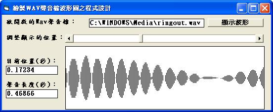

[Visual Basic 6.0] 繪製WAV聲音檔波形圖之程式設計 (作者：廖憲得 0xde)
[Visual Basic 6.0] 繪製WAV聲音檔波形圖之程式設計
當遇到 WAV、BMP 等檔案處理問題時，就必須使用二進位讀檔。


'# [Visual Basic 6.0] 繪製WAV聲音檔波形圖之程式設計
'# 0xDe
Dim WavByteArray(9999) As Byte
Dim DataE
Dim DataF
Private Sub Command1_Click()
Open Text1.Text For Binary As #1
Dim Inp As Byte
I = 0 ' 紀錄目前存放陣列數
Do While Not EOF(1)
Get #1, , Inp
WavByteArray(I) = Inp
I = I + 1
Loop
Close
' 因為題目說明說（表中數值為16進制數）所以將 16 進位轉換為 10 進位
' 判斷 00～03 Byte 是否為 "RIFF"
' 判斷 08～0E Byte 是否為 "WAVEfmt"
' 判斷 14～15 Byte 是否為 "0100" 表示PCM格式
' 判斷 16～17 Byte 是否為 "0100" 表示單聲道
' 判斷 22～23 Byte 是否為 "0800" 8位元
If ByteToData(&H0, &H3) = "RIFF" And ByteToData(&H8, &HE) = "WAVEfmt" And ByteData(&H14, &H17) = "1010" And ByteData(&H22, &H23) = "80" Then
' 取得 18～1B Byte 採樣頻率
' 取得 28～2B Byte 樣本數
DataF = 0 ' 頻率
DataE = 0 ' 樣本數
For I = 0 To 3
DataF = DataF + 256 ^ I * WavByteArray(I + &H18)
DataE = DataE + 256 ^ I * WavByteArray(I + &H28)
Next
Text3 = Format(DataE / DataF, "0.00000") ' 聲音長度
HScroll1.Min = &H2C ' 最小值為 資料開始
HScroll1.Max = HScroll1.Min + DataE ' 最大值為 資料開始 + 聲音總樣本數
Else
MsgBox "輸入的檔案名稱不是RIFF WAVEfmt PCM格式 8位元", 16, "輸入的檔案名稱：" & Text1
End If
End Sub
' Byte 轉換為 Data
Function ByteToData(ByteInp As Integer, ByteOut As Integer)
Data = ""
For I = ByteInp To ByteOut
Data = Data & Chr(WavByteArray(I))
Next I
ByteToData = Data
End Function
' Byte 輸出
Function ByteData(ByteInp As Integer, ByteOut As Integer)
Data = ""
For I = ByteInp To ByteOut
Data = Data & WavByteArray(I)
Next I
ByteData = Data
End Function
Private Sub HScroll1_Change()
Picture1.Cls
Picture1.Scale (0, 80)-(200, -80)
For I = 0 To 200
If HScroll1.Value + I <= HScroll1.Max Then
Picture1.Line (I, (WavByteArray(HScroll1.Value + I) - 128))-(I, -(WavByteArray(HScroll1.Value + I) - 128))
Else
Picture1.PSet (I, 0)
End If
Next I
Text2.Text = Format((HScroll1.Value - 44) / DataF, "0.00000") ' 目前秒數
End Sub【本文作者為「廖憲得」，原文網址為： http://www.dotblogs.com.tw/0xde/archive/2013/12/04/132528.aspx ，由陳鍾誠編輯後納入本雜誌】